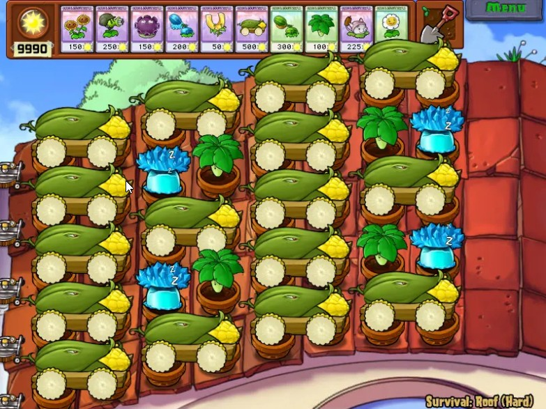
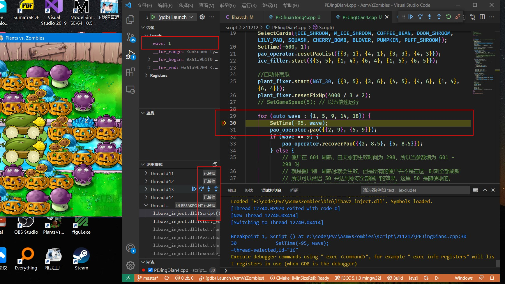
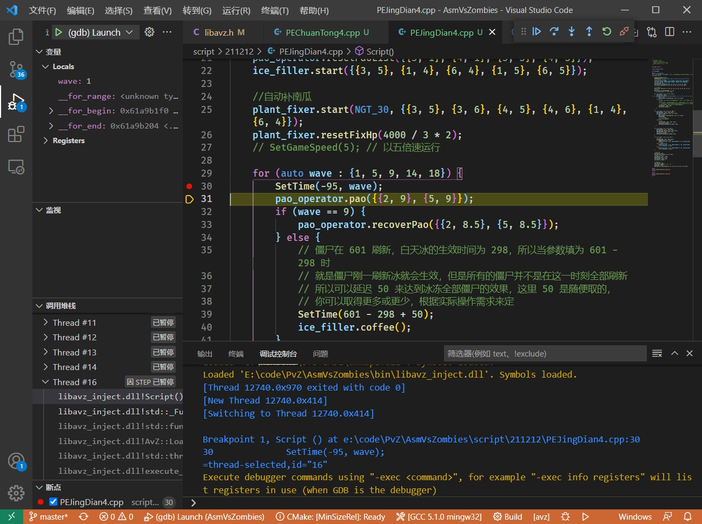
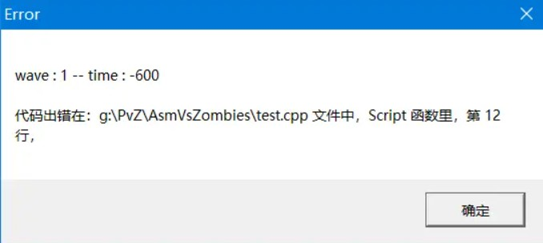
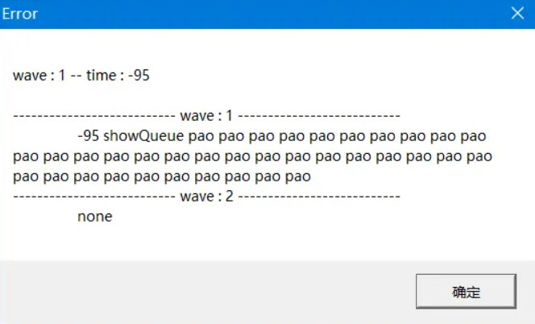

返回首页
Assembly vs. Zombies
--------windows
High-Precision PvZ TAS Frameworks
高精度植物大战僵尸键控框架
最终更新时间：2022-08-04
简介
AvZ (Assembly vs. Zombies - windows )是一套使用 C++ 语言编写的高精度植物大战僵尸键控框架，理论由 yuchenxi0_0 提出，框架底层由 yuchenxi0_0 实现，和其他框架相似的接口由 vector-wlc 编写。
AvZ 操作精度为理论上的100%绝对精准，使用这套框架将再也不用担心精度的问题，可在一定程度上减少录制视频次数，有效的完成视频制作。
本项目使用 VSCode + MinGW 进行代码编辑、编译和注入。
安装
使用教程
👉 开始阅读 👈
🔗站外链接
在 Gitee 上阅读
在 GitHub 上阅读
📺其它教程
友情链接
注意以下存储库的作者不是AsmVsZombies的作者，因此出现任何问题请咨询存储库中的相关作者
AvZ 扩展功能库 : AvZLib
AvZ 脚本库 : AvZScript
原理
在游戏主循环函数前面注入键控代码，使得键控脚本在每一帧都被调用，从而实现真正意义上100%精确的键控。
对比
从原理可以明显看出此套框架在理论实现上与传统框架截然不同，传统框架使用一个程序向 PvZ 窗口发送点击消息，而此套框架使用代码注入，直接入侵到程序内部，让游戏程序运行我们编写的脚本！其优缺点大致如下：
缺点
- 编写不慎可能会导致游戏崩溃
优点
- 精度极高
- 脚本出现错误时提示更加人性化
- 对硬件配置 (CPU) 的要求低
- 对操作时间顺序不做严格要求
致谢
yuchenxi2000/AssemblyVsZombies
lmintlcx/pvzscript
失控的指令(bilibili)
Power_tile(bilibili)
六三enjoy(bilibili)
Reisen-レイセン(bilibili)
以及所有对此项目提出建议的使用者和开发人员
目录
基础
进阶
起步
本教程只完全适配 AvZ 220630 版本，如果根据本教程编写的脚本出现语法错误，请先检查是否与该教程的版本相对应，如果确定自身没有任何问题，请及时联系我
AvZ 版本号按照以下方式查找
// AvZ根目录->inc->libavz.h
#define __AVZ_VERSION__ 220630
欢迎学习 AsmVsZombies 键控框架，AsmVsZombies 是由我和 yuchenxi0_0 两人合作完成，yuchenxi0_0 主要完成了反汇编注入工作，我主要完成了键控逻辑。我相信这套框架会带给脚本编写者焕然一新的使用体验。
本教程总体将分为两大部分：基础和进阶。
在基础部分，我们将会了解到键控所需的必备接口，例如用卡、用炮、时间设定等，因此，不论你是何方神圣，是必须将基础部分刷完的，这样在编写脚本时才不会遇到疑惑。
在进阶部分，我们将深入讨论 AvZ 的键控逻辑核心——操作队列，理解透操作队列的实现原理非常重要，然后介绍阻塞函数，动态插入函数，以及内存读取功能。
如果只是想编写炮阵的脚本，看完基础部分是足够的，但是如果想把 AvZ 玩出花来，甚至想用 AvZ 搞一搞无炮键控，那么进阶部分是必须要看的。
准备
在使用 AvZ 之前，我们需要进行一些准备，这些内容我放在了下面这个视频中，请一定耐心观看，不要错过任何一个细节。
接下来给出一些传送门
视频教程：bilibili
开发安装包下载：Gitee / GitHub 点击网页右边的发行版
更新：
-
使用 VSCode AvZ 插件的命令 ： 按下 Ctrl+Shift+P 组合键，然后再键入 AvZ : Update 再选择相应版本即可。
-
使用 AsmVsZombies 安装目录下的
版本管理器.exe, 双击运行，后续操作与前者相同。 -
使用代码存储库 Gitee / GitHub 中的相应 [版本].zip 文件，下载下来，手动解压替换更新 （如果上面两个无法使用时，只能使用此方法）。
QQ 群：704655241 ( 请先看完视频教程之后再加 )
准备阶段完成之后，请继续结合视频教程完成自己的第一脚本 ：经典十二炮。
最后，希望 AvZ 能够在键控方面帮助到您！
名称空间
为了避免与其他库的标识符冲突，AvZ 所有的标识符都放在了名称空间 AvZ 里面，请注意不要写错大小写，因此如果想使用 AvZ 的 API (函数或类等)，你可以使用以下三种方式：
// 例1. 使用 AvZ::[标识符]
AvZ::Shovel(3, 4); // 正确
AvZ::Card(XRK_1, 3, 4); // 正确
// 例2. 使用 using AvZ::[标识符]; 语句后再直接使用 [标识符]
using AvZ::Shovel;
Shovel(3, 4); // 正确
Card(XRK_1, 3, 4); // 错误，因为 Card 并没有被 using
// 例3. 使用 using namespace AvZ; 语句后再直接使用 [标识符]
using namespace AvZ;
Shovel(3, 4); // 正确
Card(XRK_1, 3, 4); // 正确，因为 using namespace AvZ; 直接“废除”了 名称空间 AvZ 的作用
以上三种方式中可以根据个人喜好任选一种使用，但是如果使用的第三方库较多，尽量不要使用第三种方式。
在此声明，由于作者精力原因，此教程所有的示例代码没有严格到每次都注意使用 AvZ:: , 但请使用者使用时注意此名称空间的作用
多次生效
我们知道很多框架在录制视频时有一个比较烦人的问题，就是一旦录制失败了，得重新启动脚本再次进行录制，但是 AvZ 提供了一个函数 OpenMultipleEffective，即一次注入多次生效函数，如果使用了这个函数，当录制视频失败时，但只要脚本的内容没有发生改变，就无需再次注入，只需要退出战斗界面，再次进入战斗界面，脚本会自动从头开始运行，这样就省去了很多调试占用的时间。使用示例如下：
// 注意：使用的关闭效果按键必须在战斗界面才会生效
// 脚本多次生效，默认按下 C 键取消此效果
OpenMultipleEffective()
// 脚本多次生效，按下 Q 键取消此效果
OpenMultipleEffective('Q')
// 脚本多次生效，按下 Q 键取消此效果，多次生效效果在主界面和选卡界面都会生效
// 脚本挂机可用这条语句
OpenMultipleEffective('Q', AvZ::MAIN_UI_OR_FIGHT_UI)
// 脚本多次生效，按下 Q 键取消此效果，多次生效效果仅在主界面生效
OpenMultipleEffective('Q', AvZ::MAIN_UI)
卡片操作
AvZ 的卡片操作十分简单，共有以下五种调用方式
// 根据卡片名称用卡
// 将荷叶放在三行四列
Card(LILY_PAD, 3, 4);
// 将荷叶放在三行四列，将倭瓜放在三行四列
Card({{LILY_PAD, 3, 4}, {SQUASH, 3, 4}});
// 优先将荷叶放在二行三列，如果不能种，则放在二行四列
Card(LILY_PAD, {{3, 4}, {2, 4}});
// 根据卡片所在卡槽位置用卡
// 将第一张卡片放在二行三列
Card(1, 2, 3);
// 优先将第一张卡片放在二行三列，如果不能种，则放在二行四列
Card(1, {{2, 3}, {2, 4}});
我们常用的是前三种，即使用卡片名称进行用卡，因为这样使用代码可读性更高，当然，除了使用英文单词外，AvZ 还支持中文拼音，例如倭瓜可以写为 WG_17，至于后面的数字是为了避免重名的，当然他还有一个意义是 PvZ 程序中的植物类型代号。
读者可能会疑惑 AvZ 中卡片名称的使用标准是什么，如 LILY_PAD 代表的是荷叶，下面是卡片名称对应表
// 植物类型
enum PlantType {
PEASHOOTER = 0, // 豌豆射手
SUNFLOWER, // 向日葵
CHERRY_BOMB, // 樱桃炸弹
WALL_NUT, // 坚果
POTATO_MINE, // 土豆地雷
SNOW_PEA, // 寒冰射手
CHOMPER, // 大嘴花
REPEATER, // 双重射手
PUFF_SHROOM, // 小喷菇
SUN_SHROOM, // 阳光菇
FUME_SHROOM, // 大喷菇
GRAVE_BUSTER, // 墓碑吞噬者
HYPNO_SHROOM, // 魅惑菇
SCAREDY_SHROOM, // 胆小菇
ICE_SHROOM, // 寒冰菇
DOOM_SHROOM, // 毁灭菇
LILY_PAD, // 荷叶
SQUASH, // 倭瓜
THREEPEATER, // 三发射手
TANGLE_KELP, // 缠绕海藻
JALAPENO, // 火爆辣椒
SPIKEWEED, // 地刺
TORCHWOOD, // 火炬树桩
TALL_NUT, // 高坚果
SEA_SHROOM, // 水兵菇
PLANTERN, // 路灯花
CACTUS, // 仙人掌
BLOVER, // 三叶草
SPLIT_PEA, // 裂荚射手
STARFRUIT, // 杨桃
PUMPKIN, // 南瓜头
MAGNET_SHROOM, // 磁力菇
CABBAGE_PULT, // 卷心菜投手
FLOWER_POT, // 花盆
KERNEL_PULT, // 玉米投手
COFFEE_BEAN, // 咖啡豆
GARLIC, // 大蒜
UMBRELLA_LEAF, // 叶子保护伞
MARIGOLD, // 金盏花
MELON_PULT, // 西瓜投手
GATLING_PEA, // 机枪射手
TWIN_SUNFLOWER, // 双子向日葵
GLOOM_SHROOM, // 忧郁菇
CATTAIL, // 香蒲
WINTER_MELON, // 冰西瓜投手
GOLD_MAGNET, // 吸金磁
SPIKEROCK, // 地刺王
COB_CANNON, // 玉米加农炮
// 模仿者命名 + M
M_PEASHOOTER, // 豌豆射手
M_SUNFLOWER, // 向日葵
M_CHERRY_BOMB, // 樱桃炸弹
M_WALL_NUT, // 坚果
M_POTATO_MINE, // 土豆地雷
M_SNOW_PEA, // 寒冰射手
M_CHOMPER, // 大嘴花
M_REPEATER, // 双重射手
M_PUFF_SHROOM, // 小喷菇
M_SUN_SHROOM, // 阳光菇
M_FUME_SHROOM, // 大喷菇
M_GRAVE_BUSTER, // 墓碑吞噬者
M_HYPNO_SHROOM, // 魅惑菇
M_SCAREDY_SHROOM, // 胆小菇
M_ICE_SHROOM, // 寒冰菇
M_DOOM_SHROOM, // 毁灭菇
M_LILY_PAD, // 荷叶
M_SQUASH, // 倭瓜
M_THREEPEATER, // 三发射手
M_TANGLE_KELP, // 缠绕海藻
M_JALAPENO, // 火爆辣椒
M_SPIKEWEED, // 地刺
M_TORCHWOOD, // 火炬树桩
M_TALL_NUT, // 高坚果
M_SEA_SHROOM, // 水兵菇
M_PLANTERN, // 路灯花
M_CACTUS, // 仙人掌
M_BLOVER, // 三叶草
M_SPLIT_PEA, // 裂荚射手
M_STARFRUIT, // 杨桃
M_PUMPKIN, // 南瓜头
M_MAGNET_SHROOM, // 磁力菇
M_CABBAGE_PULT, // 卷心菜投手
M_FLOWER_POT, // 花盆
M_KERNEL_PULT, // 玉米投手
M_COFFEE_BEAN, // 咖啡豆
M_GARLIC, // 大蒜
M_UMBRELLA_LEAF, // 叶子保护伞
M_MARIGOLD, // 金盏花
M_MELON_PULT, // 西瓜投手
};
// 兼容汉语拼音
#define WDSS_0 PEASHOOTER // 豌豆射手
#define XRK_1 SUNFLOWER // 向日葵
#define YTZD_2 CHERRY_BOMB // 樱桃炸弹
#define JG_3 WALL_NUT // 坚果
#define TDDL_4 POTATO_MINE // 土豆地雷
#define HBSS_5 SNOW_PEA // 寒冰射手
#define DZH_6 CHOMPER // 大嘴花
#define SCSS_7 REPEATER // 双重射手
#define XPG_8 PUFF_SHROOM // 小喷菇
#define YGG_9 SUN_SHROOM // 阳光菇
#define DPG_10 FUME_SHROOM // 大喷菇
#define MBTSZ_11 GRAVE_BUSTER // 墓碑吞噬者
#define MHG_12 HYPNO_SHROOM // 魅惑菇
#define DXG_13 SCAREDY_SHROOM // 胆小菇
#define HBG_14 ICE_SHROOM // 寒冰菇
#define HMG_15 DOOM_SHROOM // 毁灭菇
#define HY_16 LILY_PAD // 荷叶
#define WG_17 SQUASH // 倭瓜
#define SFSS_18 THREEPEATER // 三发射手
#define CRHZ_19 TANGLE_KELP // 缠绕海藻
#define HBLJ_20 JALAPENO // 火爆辣椒
#define DC_21 SPIKEWEED // 地刺
#define HJSZ_22 TORCHWOOD // 火炬树桩
#define GJG_23 TALL_NUT // 高坚果
#define SBG_24 SEA_SHROOM // 水兵菇
#define LDH_25 PLANTERN // 路灯花
#define XRZ_26 CACTUS // 仙人掌
#define SYC_27 BLOVER // 三叶草
#define LJSS_28 SPLIT_PEA // 裂荚射手
#define YT_29 STARFRUIT // 杨桃
#define NGT_30 PUMPKIN // 南瓜头
#define CLG_31 MAGNET_SHROOM // 磁力菇
#define JXCTS_32 CABBAGE_PULT // 卷心菜投手
#define HP_33 FLOWER_POT // 花盆
#define YMTS_34 KERNEL_PULT // 玉米投手
#define KFD_35 COFFEE_BEAN // 咖啡豆
#define DS_36 GARLIC // 大蒜
#define YZBHS_37 UMBRELLA_LEAF // 叶子保护伞
#define JZH_38 MARIGOLD // 金盏花
#define XGTS_39 MELON_PULT // 西瓜投手
#define JQSS_40 GATLING_PEA // 机枪射手
#define SZXRK_41 TWIN_SUNFLOWER // 双子向日葵
#define YYG_42 GLOOM_SHROOM // 忧郁菇
#define XP_43 CATTAIL // 香蒲
#define BXGTS_44 WINTER_MELON // 冰西瓜投手
#define XJC_45 GOLD_MAGNET // 吸金磁
#define DCW_46 SPIKEROCK // 地刺王
#define YMJNP_47 COB_CANNON // 玉米加农炮
// 模仿者植物
#define M_WDSS_0 M_PEASHOOTER // 豌豆射手
#define M_XRK_1 M_SUNFLOWER // 向日葵
#define M_YTZD_2 M_CHERRY_BOMB // 樱桃炸弹
#define M_JG_3 M_WALL_NUT // 坚果
#define M_TDDL_4 M_POTATO_MINE // 土豆地雷
#define M_HBSS_5 M_SNOW_PEA // 寒冰射手
#define M_DZH_6 M_CHOMPER // 大嘴花
#define M_SCSS_7 M_REPEATER // 双重射手
#define M_XPG_8 M_PUFF_SHROOM // 小喷菇
#define M_YGG_9 M_SUN_SHROOM // 阳光菇
#define M_DPG_10 M_FUME_SHROOM // 大喷菇
#define M_MBTSZ_11 M_GRAVE_BUSTER // 墓碑吞噬者
#define M_MHG_12 M_HYPNO_SHROOM // 魅惑菇
#define M_DXG_13 M_SCAREDY_SHROOM // 胆小菇
#define M_HBG_14 M_ICE_SHROOM // 寒冰菇
#define M_HMG_15 M_DOOM_SHROOM // 毁灭菇
#define M_HY_16 M_LILY_PAD // 荷叶
#define M_WG_17 M_SQUASH // 倭瓜
#define M_SFSS_18 M_THREEPEATER // 三发射手
#define M_CRHZ_19 M_TANGLE_KELP // 缠绕海藻
#define M_HBLJ_20 M_JALAPENO // 火爆辣椒
#define M_DC_21 M_SPIKEWEED // 地刺
#define M_HJSZ_22 M_TORCHWOOD // 火炬树桩
#define M_GJG_23 M_TALL_NUT // 高坚果
#define M_SBG_24 M_SEA_SHROOM // 水兵菇
#define M_LDH_25 M_PLANTERN // 路灯花
#define M_XRZ_26 M_CACTUS // 仙人掌
#define M_SYC_27 M_BLOVER // 三叶草
#define M_LJSS_28 M_SPLIT_PEA // 裂荚射手
#define M_YT_29 M_STARFRUIT // 杨桃
#define M_NGT_30 M_PUMPKIN // 南瓜头
#define M_CLG_31 M_MAGNET_SHROOM // 磁力菇
#define M_JXCTS_32 M_CABBAGE_PULT // 卷心菜投手
#define M_HP_33 M_FLOWER_POT // 花盆
#define M_YMTS_34 M_KERNEL_PULT // 玉米投手
#define M_KFD_35 M_COFFEE_BEAN // 咖啡豆
#define M_DS_36 M_GARLIC // 大蒜
#define M_YZBHS_37 M_UMBRELLA_LEAF // 叶子保护伞
#define M_JZH_38 M_MARIGOLD // 金盏花
#define M_XGTS_39 M_MELON_PULT // 西瓜投手
时间设定
由于使用了操作队列，AvZ 关于时间的操作十分自由，几乎不受任何约束，可以写的随心所欲 。后续将会介绍什么是操作队列，以及如何更高级的使用操作队列，现在只介绍操作队列中的一环——时间设定。
首先，时间设定主要是由函数 SetTime 实现的，具体使用如下：
SetTime(-599, 1);
Card(LILY_PAD, 3, 4);
这样书写后，脚本将会在第一波刷新前 599cs 在三行四列种下荷叶，看起来很简单，但实际上 SetTime 的使用也许比你想象的更加灵活，下面通过与其他框架的对比体现这一点。
在其他框架中有关时间设置的函数全部是阻塞函数，即只有到达指定的时间点时，时间函数之后的语句才能运行，这样带来的一些令人头疼的问题，就是每次写代码的时候还得用计算器计算时间先后顺序，例如以下代码运行是会报出错误的，错误大致是：时刻点 200 已过去
Prejudge(300, 1);
Card(1, 1, 1);
Until(200);
Card(3, 2, 1);
报错的原因就是因为阻塞，由于时间点已经到达了第一波刷新后 300cs ，所以再使用 Until(200) 是不符合逻辑的，因为时间不能倒流。但是在 AvZ 中这种写法是允许的，例如下面的代码：
SetTime(300, 1);
Card(1, 1, 1);
SetTime(200);
Card(3, 2, 1);
是完全正确的，注意，第二个 SetTime 并没有填写第二个指定波数的参数，如果没有填写第二个指定波数的参数，那么此时 SetTime 设定的波数将会与上一次调用时填写的波数相同，除了 SetTime 函数，AvZ 中还有一个时间设定函数 Delay，令人兴奋的是，Delay 函数参数可以填写为负值，意思就是提前，例如：
SetTime(300, 1);
Card(1, 1, 1);
SetTime(200);
Card(3, 2, 1);
Delay(-10);
Card(2, 3, 1);
这样写在 AvZ 中是允许的，但是在使用 Delay 之前必须使用 SetTime，因为 Delay 需要知道延迟的基准时间是什么。
总之，AvZ 中的时间设定非常人性化，使用者可以完全不用考虑时间先后的问题，只需要注意自己是否将时间点设定正确即可。
存冰类
接下来介绍一个简单而又重要的类：存冰类
在 AvZ 中，存冰和使用冰的操作被封装成了类提供给大家使用，熟悉 C++ 的大佬鼠肯定知道，如果想使用类中的函数（这里指非静态函数），不可避免的是使用类创建一个对象，然后使用这个对象调用成员函数，但是现在不必这么做，因为 AvZ 中提前为大家准备好了存冰类的对象 ice_filler，其声明在 libavz.h 头文件下
extern IceFiller ice_filler;
在这条语句中 AvZ::IceFiller 就是存冰类，ice_filler 即为其创建（实例化）的对象，接下来说明如何使用 ice_filler 这个对象完成存冰和使用冰的功能。
// 在一行二列，一行三列进行存冰
// 注意是优先存 一行二列 再存 一行三列
// 不要频繁调用此接口，性能消耗大
ice_filler.start({{1, 2}, {1, 3}});
// 使用存冰列表中的冰
// 注意 coffee 函数将会倒序使用存冰列表中的冰，例如如果使用示例 start 中的列表，那么 coffee 函数将会优先使用一行三列的存冰。
ice_filler.coffee();
// 停止存冰
// 完全停止这个对象的运行，如果长时间不再使用此对象需要调用此接口
// 再次激活对象的运行需要调用 start
ice_filler.stop();
// 暂停存冰
// 对象以一种低耗状态运行，如果短时间不使用此对象需要调用此接口
// 再次激活对象的运行需要调用 goOn
ice_filler.pause();
// 继续存冰
ice_filler.goOn();
// 重置存冰列表为三行三列，三行四列
ice_filler.resetFillList({{3, 3}, {3, 4}});
// 只使用原版冰
ice_filler.resetIceSeedList({ICE_SHROOM})
// 优先使用模仿冰，再使用原版冰
ice_filler.resetIceSeedList({M_ICE_SHROOM, ICE_SHROOM})
冰三和铲除函数
冰三
由于 PvZ 序号大小的影响，植物的生效倒计时会发生 1cs 的波动，为了解决这个问题，AvZ 提供了设定植物生效时间的功能。
请不要滥用此功能，这可能会破坏游戏规则
SetPlantActiveTime 函数参数的意义是将指定类型的植物的生效时间设置为 最近一次的 SetTime 设定的时间点的参数时间后，使用了此函数后冰三这个操作是基本不可能失败的。
// 修正寒冰菇生效时间点到 (-599, 1) 的 298cs 后
SetTime(-599, 1);
SetPlantActiveTime(ICE_SHROOM, 298);
铲除
铲除操作由函数 Shovel 实现
// 铲除4行6列的植物,如果植物有南瓜保护默认铲除被保护植物
Shovel(4, 6);
// 铲除4行6列的植物,如果植物有南瓜保护铲除南瓜
Shovel(4, 6, true);
// 铲除3行6列，4行6列的植物
Shovel({{3, 6},{4, 6}});
修补植物类
有时候在游戏中我们需要修补植物，AvZ 将这一功能封装为了 PlantFixer 类供大家使用。
extern AvZ::PlantFixer plant_fixer;
在这条语句中，AvZ::PlantFixer 是修补植物类，plant_fixer 是其创建的对象，这条语句仍在头文件 libavz.h 中，接下来介绍修补植物类的接口函数。
接口简介
// 位置被重置为{2，3}，{3，4}
plant_fixer.resetFixList({{2, 3}, {3, 4}});
// 自动得到修补的位置列表
plant_fixer.autoGetFixList();
// 修补全场的高坚果
plant_fixer.start(GJG_23)
// 修补位置为{1，3}，{2，3}位置的南瓜头
plant_fixer.start(NGT_30, {{1, 3}, {2, 3}})
// 修补位置为{1，3}，{2，3}位置的坚果，血量降至 300 开始修补
plant_fixer.start(JG_3, {{1, 3}, {2, 3}}, 300)
// 将修补触发血量改为200
plant_fixer.resetFixHp(200)
// 使用咖啡豆
plant_fixer.isUseCoffee(true)
// 不使用咖啡豆
plant_fixer.isUseCoffee(false)
// pause goOn stop 这三个接口与存冰类的含义相同，在此不再赘述
同时修补多种植物
在一局游戏中，我们可能需要修补多种植物，但是需要注意的是，一个修补植物对象只能修补一种植物，那如何解决这个问题呢，其实非常简单，我们只需要使用修补植物类创建多个修补植物对象即可。
AvZ::PlantFixer nut_fixer;
AvZ::PlantFixer pumpkin_fixer;
void Script(){
}
注意，为了方便使用，需要将对象创建在 Script 函数外部，像这样创建两个对象，用一个对象修补坚果，用另一个对象修补南瓜。
void Script(){
nut_fixer.start(JG_3);
nut_fixer.resetFixHp(4000 / 3 * 2); // 这里注意一定要在 start 函数之后再调用 resetFixHp, 不然效果会被 start 函数的默认值覆盖
pumpkin_fixer.start(NGT_30);
pumpkin_fixer.resetFixHp(4000 / 3 * 2);
}
这样我们就可以同时修补坚果和南瓜了，到这里大家可能有个疑惑，为什么一个对象不能同时开两个 start 呢？原因很简单，因为如果这个对象再调用 stop 函数时，他自己会不知道要停止哪个修补任务。
总结：我们可以使用 start pause goOn stop 控制语句来达到精准控制修补植物对象修补状态的目的，同时可以使用一系列的属性设置函数来控制修补植物对象的修补类型和修补位置等属性，当一局游戏中需要修补多种植物时，需要创建多个修补植物对象。
炮操作类——初步
众所周知，炮序排布是一块难啃的瓜，如果解中存在着原地铲种炮、位移铲种炮、闪现铲种炮、超时空铲种炮，并且场地为天台时，排炮序可能让我们怀疑人生。因此我们需要一个强大的工具使我们从复杂的工作中解放出来，炮操作类便应运而生。吹逼结束。
炮操作类是 AvZ 中最为复杂的一个类，但在我的角度来看，他也是最为强大的一个类。为了防止本文篇幅过长，这里只介绍其部分基础接口 。
首先，炮操作类与存冰类一样，也有一个预先创建的对象 pao_operator，其也声明在头文件 libavz.h 中，声明如下：
extern AvZ::PaoOperator pao_operator;
其中 AvZ::PaoOperator 为炮操作类的名称，pao_operator 是炮操作类实例化的对象，如果使用者在脚本中只使用一个炮列表，pao_operator 是足够的，下面介绍最基本的接口。
首先介绍炮列表是什么，炮列表实际上一个发射炮的列表
pao_operator.resetPaoList({{1, 2}, {2, 3}});
对于上条语句的意思是将一行二列，二行三列的炮存到 pao_operator 对象中，此时 pao_operator 就知道了自己在发射炮的时候发哪里的炮了。
接下来是发炮函数 pao
pao_operator.pao(2, 9);
pao_operator.pao({{2, 9}, {5, 9}});
pao 函数有两种调用形式，即为单发形式和多发形式，针对于示例中的炮列表，炮函数将会先把位于一行二列的炮发往二行九列，然后再把二行三列的炮发往二行九列，最后把一行二列的炮发往五行九列，注意对应顺序，resetPaoList 告诉了 pao_operator 我能发射哪里的炮，pao 则根据 resetPaoList 中的位置书写顺序依次发射。
接下来是等待炮恢复立即发炮函数 recoverPao
pao_operator.recoverPao(2, 9);
pao_operator.recoverPao({{2, 9}, {5, 9}});
recoverPao 函数会一直等待炮可用后再将炮立即发出去，其他方面和 pao 函数相同。
接下来是屋顶飞行时间调整函数 roofPao
pao_operator.roofPao(2, 9);
pao_operator.roofPao({{2, 9}, {5, 9}});
我们知道，由于上届之风（游戏BUG）的影响，天台中位于不同列的炮其飞行时间也不同，这带来了非常复杂的时间调整问题，为了解决这一问题，roofPao 统一将炮的飞行时间修正为了 387cs ，注意，这里的修正并没有改变游戏规则，而是 AvZ 根据炮所在的列数对其进行了适当的延后发射调整。
接下是最高发射权限函数 rawPao / rawRoofPao
pao_operator.rawPao(1, 1, 2, 9);
pao_operator.rawPao({{1, 1, 2, 9}, {1, 2, 5, 9}});
pao_operator.rawRoofPao(1, 1, 2, 9);
pao_operator.rawRoofPao({{1, 1, 2, 9}, {1, 2, 5, 9}});
对于第一个例子的解释是将位于一行一列的炮发往二行九列，其余的例子由上述解释很简单的推出是什么意思，这里要强调的是：rawPao 系列的函数是超级权限的函数，不论发射的炮是否位于 resetPaoList 录入的位置，rawPao 都能发射，只要场地上目标位置确实存在炮，rawPao 函数都可以发射。
炮操作类——多炮列表
上一篇文章中我们知道了炮操作类中最基本的接口，这篇文章我们将讨论如何使用炮操作类创建多个炮列表。
创建多个炮列表语法：
AvZ::PaoOperator feng_pao;
AvZ::PaoOperator ping_di_pao;
void Script(){
}
请注意在创建多个炮列表时，必须将炮列表定义为全局对象，即定义在函数 void Script() 外部，这点十分重要，如果定义在 Script 函数内部，会为以后的使用带来不必要的麻烦。下面我们结合具体的例子说明多炮列表的意义。
RE 十炮：
对于此阵，由于风炮（位于一列的炮）和平地炮（位于六列的炮）的落点偏移不同驱使着我们必须将平地炮发往四行，将风炮发往二行，否则会导致漏炸。所以此时如果我们使用一个炮列表则必须刻意的对炮的使用顺序进行设计，但是多炮列表就解决了这个麻烦，接下来我们看多炮列表是如何做到的。
feng_pao.resetPaoList({{
{1, 1},
{2, 1},
{3, 1},
{4, 1},
{5, 1},
}});
ping_di_pao.resetPaoList({{
{1, 6},
{2, 6},
{3, 6},
{4, 6},
{5, 6},
}});
feng_pao 此时储存着风炮所在的位置，ping_di_pao 储存着平地炮所在的位置，由于是天台，这里我们使用 roofPao 函数，此时只要使用对应的炮操作对象调用 roofPao 函数就可以使用相应位置的炮。
feng_pao.roofPao(2, 9);
ping_di_pao.roofPao(4, 9);
这样我们就保证了发射的一对炮里必是一个来自平地炮一个来自风炮的，并且平地炮必射向四行九列，风炮必射向二行九列，这样就不用刻意设计炮位置的书写顺序了。
炮操作类——铲种
AvZ 中没有高级封装的 fixPao 函数，取而代之的是铲除函数 Shovel ，种炮函数 plantPao，这两个函数的有机结合会比 fixPao 更加灵活，下面举例说明
首先介绍这两个函数的使用
// 原地铲种位于二行三列的炮
Shovel(2, 3);
pao_operator.plantPao(2, 3);
看起来是要比 fixPao 复杂了，因为 fixPao 只需要一条语句，而这需要两条语句，但是在 "炮操作类——初步" 中提到过，铲种炮不仅仅原地铲种一种形式，还有位移铲种等多种形式，如果使用 fixPao 来实现全部的铲种形式时，就会显得力不从心，但是这两个函数可以很容易的实现，例如：
// 位移铲种
Shovel(2, 4);
pao_operator.plantPao(2, 3);
// 超时空铲种（先种后铲）
SetTime(-200, 2);
pao_operator.plantPao(2, 3);
SetTime(-100, 2);
Shovel(1, 4);
这些都是 fixPao 很难以实现的，因此这种方式比 fixPao 灵活的多。
除 Shovel 和 plantPao 之外，PaoOperator 中还存在着一个铲种函数 fixLatestPao，即为修补上一枚发射的炮，使用示例如下：
pao_operator.pao(2, 9);
pao_operator.fixLatestPao();
fixLatestPao 将会修补 pao 刚刚发射出去的炮，此函数不用填写任何参数，直接调用即可，但是其只支持原地铲种，原因后续再进行介绍。
炮操作类——炮序模式
在 PaoOperator 类中，有一个十分重要的成员我们还未介绍，那就是 setSequentialMode，在 AvZ 中，使用炮的顺序有两种，一个是根据时间顺序用炮（框架默认），另一个是根据空间顺序用炮，接下来，我们将介绍这两种模式如何设定以及有什么不同。
如果想设定炮序使用模式，需要使用 setSequentialMode 函数，示例如下：
// 将使用模式设置为空间使用模式，AvZ 默认开启此模式
pao_operator.setSequentialMode(AvZ::PaoOperator::TIME);
// 时间使用模式
pao_operator.setSequentialMode(AvZ::PaoOperator::SAPCE);
时间使用模式
时间使用模式比较智能，开启此模式时，炮操作对象会每次扫描其储存的炮列表中恢复时间最短的炮，如果同时有多门炮可用时，炮操作对象会根据 resetPaoList 中书写的顺序发射炮。这种模式下会使得原地铲种不用调整炮序，但是同样会带来一个麻烦，就是我们可能无法知道某一时刻点炮操作对象到底发到了哪个位置的炮，此时如果我们需要进行铲种就会比较麻烦，此时，就需要调用前一个文章中的函数 fixLatestPao 了，虽然我们不知道，但是炮操作对象知道自己上一次发射的炮位于什么位置，因此如果解中只存在原地铲种且不关心铲种什么位置时，推荐使用此模式与 fixLatestPao 的组合。
空间使用模式
空间使用模式一旦开启，炮操作类对象将会完全按照 resetPaoList 中写的顺序进行发射，这样带来的好处就是我们每时每刻都知道炮发到了哪个位置，但是有个明显的缺点就是当解中含有铲种炮时，会带来比较烦人的炮序调整。
在文章的最后，再给大家介绍两个炮序调整函数 skipPao 和 setNextPao
// 跳过炮列表中的两门炮
pao_operator.skipPao(2);
// 将炮列表中位于二行三列中的炮设置为下一门即将发射的炮
pao_operator.setNextPao(2, 3);
// 将炮列表中的第一门炮设置为下一门即将发射的炮
pao_operator.setNextPao(1);
注意，虽然调整炮序函数和空间使用模式是绝配，但是并不意味着在时间使用模式下不能用；
同理，虽然 fixLatestPao 和时间使用模式是绝配，但是并不意味着在空间使用模式下不能用；
具体使用后发生的现象笔者不在赘述，如果实在想象不出来可以在脚本中试一试，这很好理解。
炮操作类——炮序排布
回到炮操作类设计之初要解决的问题——炮序排布，通过前几篇文章的说明，我想信大家已经对炮操作类有了一个比较全面的认识，此篇文章我们就灵活运用炮操作类帮助我们排炮序，接下来分几种的具体情况来讨论。
非天台场景
当场景为非天台场景时，多炮列表的存在意义不是很大，因为平地场景炮的飞行时间，落点偏移都是相同的，因此大部分情况一个炮列表是够用的。
无铲种炮
这种情况最为简单，不论使用哪种炮序模式，都可以轻松的胜任。
原地铲种 + 不关心铲种位置
这种情况推荐大家使用 时间使用模式 + fixLatestPao 的组合，由于不关心铲种位置，这种组和可以说是最适合这种情况的了，可以省去基本所有的麻烦。
原地铲种 + 关心铲种位置
由于关心铲种位置，这种情况下使用 fixLatestPao 就显得很勉强，但是也不是不能使用，我们需要知道当前炮发射到了哪门。因此在这种情况下，一种解决方案是使用空间使用模式，让炮的发射顺序完全掌握在我们的手中，但是这带来了一个麻烦，需要使用 resetPaoList 不断调整炮序；因此还有另一种解决方案，那就是不把铲种炮看作炮，而把他当作卡，这种思路的具体做法就是不将铲种炮录入炮列表中，并且铲种炮使用 rawPao 发射，之前我们提到过，rawPao 可以发射场地上真实存在的炮，不管他是否在炮列表中。而剩下的非铲种炮都放在一个列表里，这样就基本不用使用 resetPaoList 调整炮序了。
位移铲种
由于是位移铲种，我们肯定关心铲种的位置，因此这种情况和上一种的解决思路相同，不把铲种炮写在炮列表里，使用 rawPao 函数发射铲种炮，将剩下的非铲种炮都放在一个列表里。
天台场景
当场景为天台场景时，多炮列表的存在就变的有意义了，因为天台场景炮的落点偏移不是相同的，因此如果只使用一个炮列表会使得炮序排布变得非常困难。 天台排炮序的大致思路是将所在列相同的炮放在一个炮列表中，
例如 RE 18

我们可以这样做:
// 分配四个炮列表，分别是
AvZ::PaoOperator pao_1col;
AvZ::PaoOperator pao_3col;
AvZ::PaoOperator pao_5col;
AvZ::PaoOperator pao_7col;
void Script(){
// 为其分配炮
pao_1col.resetPaoList({{1, 1}, {2, 1}, {3, 1}, {3, 1}, {5, 1}});
pao_3col.resetPaoList({{1, 3}, {2, 3}, {3, 3}, {3, 3}, {5, 3}});
pao_5col.resetPaoList({{1, 5}, {2, 5}, {3, 5}, {3, 5}, {5, 5}});
pao_7col.resetPaoList({{1, 7}, {2, 7}, {3, 7}});
}
这样我们使用相应的对象调用相应的炮函数就可以发射相应位置的炮了，当然我们还可能会有一个疑问第三列和第五列的炮可以作为两用炮，那么我们可以再设置一个炮列表
// 分配五个炮列表，分别是
AvZ::PaoOperator pao_1col;
AvZ::PaoOperator pao_3col;
AvZ::PaoOperator pao_5col;
AvZ::PaoOperator pao_7col;
AvZ::PaoOperator liang_yong; // 两用炮
void Script(){
// 为其分配炮
pao_1col.resetPaoList({{1, 1}, {2, 1}, {3, 1}, {3, 1}, {5, 1}});
pao_3col.resetPaoList({{1, 3}, {2, 3}, {3, 3}, {3, 3}, {5, 3}});
pao_5col.resetPaoList({{1, 5}, {2, 5}, {3, 5}, {3, 5}, {5, 5}});
pao_7col.resetPaoList({{1, 7}, {2, 7}, {3, 7}});
liang_yong.resetPaoList({{1, 3}, {2, 3}, {3, 3}, {3, 3}, {5, 3}, {1, 5}, {2, 5}, {3, 5}, {3, 5}, {5, 5}});
}
在 AvZ 中这样做是允许的，一枚炮可以被多个炮列表所占用，这样当我们使用 liang_yong 这个对象发射炮时，其必会发射位于第三列和第五列的炮，当然如果你觉得这样还不够灵活，可以再创建一个 all_pao 对象来包含场地上所有的炮，这样使用 all_pao 对象就可以发射场地上任意位置的炮了。 这里有一个例子，天台原地铲种：

其示例脚本链接： https://gitee.com/vector-wlc/AsmVsZombies/blob/master/script/210820/RECaoDong16.cpp 。
当天台场景含有位移铲种时，仍推荐大家将铲种炮放在炮列表外并使用 rawPao 函数发射，至于应该使用时间使用模式还是空间使用模式，应由具体情况来决定，这两种模式没有孰优孰劣的说法，更适合阵型排炮序的模式就是优的。
上面讨论只是基于我的个人观点，如果对炮操作类和炮序排布有更好的意见与建议，欢迎联系我。
波长设定与非定态
在脚本编写过程中，我们时常困扰于僵尸的提前刷新、延迟刷新问题，这些问题一旦发生，视频基本要推倒重来，为了解决这一问题，AvZ 提供了强制控制僵尸刷新函数 SetWavelength。其使用方法如下：
SetWavelength({
{1, 601},
{2, 601},
{3, 601},
{4, 1800},
{5, 601},
{6, 601},
{7, 601},
{8, 1800},
{10, 601},
{11, 601},
{12, 601},
{13, 1800},
{14, 601},
{15, 601},
{16, 601},
{17, 1800},
{18, 601},
});
看完这个参数的填写相必大家也就明白这个函数参数的意义是啥了，对没错，上述语句的意思是将第一波的波长设置为601，将第二波的波长设置为601……，当然我们不必将每一波的波长都设置一遍，例如下面这种调用方法也是可以的
SetWavelength({
{1, 601},
{4, 1800},
{6, 601},
});
注意，此函数不能设置第 9 19 20 波的波长，并且设置波长的范围只能为 [601, 2500]，因为此函数不允许游戏最基本的规则被破坏。
那么设置好相应波的波长后能带给我们什么便利呢？
SetTime 的时间参数可以填写小于 -200 的值
如果我们设定了第一波的波长，那么第二波的 SetTime 就可以这么填写 SetTime(-400, 2)，因为我们在游戏运行前告诉了 AvZ 这个框架僵尸的刷新时刻点。
其实有很多人疑惑为什么普通波的时刻点不能小于 -200，原因其实很简单，是由 PvZ 这个游戏的规则决定的，由于僵尸刷新倒计时会发生从某个值到 200cs 的突变，所以通常情况下时刻点的设定是不能小于 -200 的。
给非定态解的视频录制带来巨大的便利
我们知道，非定态解在录制视频时是很伤肝的，因为每一种刷新情况的出现是有几率的，但是如果我们使用了设定波长函数，那么僵尸的刷新就会强制和我们设定的波长一样，这样录制视频就会方便非常多。
总结：设定波长函数是一个通过改写游戏的内存来达到强制控制僵尸刷新的函数，当使用了这个函数，会扩充 SetTime 的时间参数填写范围，并且由于强制控制了僵尸的刷新情况，非定态解可以使用穷举法拆分成多个定态解去处理。
按键绑定
在 AvZ 中我们可以使用 KeyConnect 函数将操作和键盘进行绑定，使用如下
KeyConnect('Q', [=](){
Card(WG_17, 1, 1);
});
使用这条语句后，当按下 Q 键时，将会在一行一列种植一个倭瓜，但是这种写法不是很好，因为我们一局游戏很少情况只将一个卡片用在一个位置上，因此这个时候需要再介绍两个函数，MouseRow 和 MouseCol ，分别是获取当前鼠标所在行和所在列，我们将这两个函数与 KeyConnect 结合起来，例如:
KeyConnect('Q', [=](){
Card(WG_17, MouseRow(), MouseCol());
});
这样的话，当我们按下 Q 键时，将会在鼠标位置处放置一个倭瓜，这样实用性就大大提升了，当然 KeyConnect 几乎可以与 AvZ 中所有函数进行绑定。
按下 Q 键在鼠标位置处发一门炮
KeyConnect('Q', [=](){
pao_operator.pao(MouseRow(), MouseCol());
});
按下 Q 键开启多次生效模式
KeyConnect('Q', [=](){
OpenMultipleEffective();
});
因此，KeyConnect 的使用特别灵活，但是需要注意的一点是，一个按键只能被绑定一次，例如下面的代码就是错误的
KeyConnect('Q', [=](){
Card(WG_17, MouseRow(), MouseCol());
});
KeyConnect('Q', [=](){
OpenMultipleEffective();
});
Q 键绑定了用卡和多次生效，这样做是不可以的，因为 AvZ 并不知道按下 Q 键时到底要执行哪个绑定的操作，会导致热键冲突，如果此时确实想按下 Q 键同时执行用卡和多次生效的操作，只需要将他们写在一个 KeyConnect 中即可。
KeyConnect('Q', [=](){
Card(WG_17, MouseRow(), MouseCol());
OpenMultipleEffective();
});
出怪设置与女仆秘籍
出怪设置
AvZ 中设置出怪的函数有两个，分别是 SetZombies 和 SetWaveZombies，前者设置全局的出怪类型，后者设置特定波的出怪类型。
// 设置出怪为 橄榄、红眼、白眼、气球
SetZombies({GL_7, HY_32, BY_23, QQ_16});
其中参数的填写可以在 pvzstruct.h 中找到相应的命名
enum ZombieType {
ZOMBIE = 0, // 普僵
FLAG_ZOMBIE, // 旗帜
CONEHEAD_ZOMBIE, // 路障
POLE_VAULTING_ZOMBIE, // 撑杆
BUCKETHEAD_ZOMBIE, // 铁桶
NEWSPAPER_ZOMBIE, // 读报
SCREEN_DOOR_ZOMBIE, // 铁门
FOOTBALL_ZOMBIE, // 橄榄
DANCING_ZOMBIE, // 舞王
BACKUP_DANCER, // 伴舞
DUCKY_TUBE_ZOMBIE, // 鸭子
SNORKEL_ZOMBIE, // 潜水
ZOMBONI, // 冰车
ZOMBIE_BOBSLED_TEAM, // 雪橇
DOLPHIN_RIDER_ZOMBIE, // 海豚
JACK_IN_THE_BOX_ZOMBIE, // 小丑
BALLOON_ZOMBIE, // 气球
DIGGER_ZOMBIE, // 矿工
POGO_ZOMBIE, // 跳跳
ZOMBIE_YETI, // 雪人
BUNGEE_ZOMBIE, // 蹦极
LADDER_ZOMBIE, // 扶梯
CATAPULT_ZOMBIE, // 投篮
GARGANTUAR, // 白眼
IMP, // 小鬼
DR_ZOMBOSS, // 僵博
GIGA_GARGANTUAR = 32 // 红眼
};
#define PJ_0 ZOMBIE // 普僵
#define QZ_1 FLAG_ZOMBIE // 旗帜
#define LZ_2 CONEHEAD_ZOMBIE // 路障
#define CG_3 POLE_VAULTING_ZOMBIE // 撑杆
#define TT_4 BUCKETHEAD_ZOMBIE // 铁桶
#define DB_5 NEWSPAPER_ZOMBIE // 读报
#define TM_6 SCREEN_DOOR_ZOMBIE // 铁门
#define GL_7 FOOTBALL_ZOMBIE // 橄榄
#define WW_8 DANCING_ZOMBIE // 舞王
#define BW_9 BACKUP_DANCER // 伴舞
#define YZ_10 DUCKY_TUBE_ZOMBIE // 鸭子
#define QS_11 SNORKEL_ZOMBIE // 潜水
#define BC_12 ZOMBONI // 冰车
#define XQ_13 ZOMBIE_BOBSLED_TEAM // 雪橇
#define HT_14 DOLPHIN_RIDER_ZOMBIE // 海豚
#define XC_15 JACK_IN_THE_BOX_ZOMBIE // 小丑
#define QQ_16 BALLOON_ZOMBIE // 气球
#define KG_17 DIGGER_ZOMBIE // 矿工
#define TT_18 POGO_ZOMBIE // 跳跳
#define XR_19 ZOMBIE_YETI // 雪人
#define BJ_20 BUNGEE_ZOMBIE // 蹦极
#define FT_21 LADDER_ZOMBIE // 扶梯
#define TL_22 CATAPULT_ZOMBIE // 投篮
#define BY_23 GARGANTUAR // 白眼
#define XG_24 IMP // 小鬼
#define JB_25 DR_ZOMBOSS // 僵博
#define HY_32 GIGA_GARGANTUAR // 红眼
// 设置第二波出怪为 橄榄、红眼、白眼、气球
SetWaveZombies(2, {GL_7, HY_32, BY_23, QQ_16});
除需要额外填写一个波数参数外，这两个函数其他方面没有什么区别。需要注意的是，不论出怪类型里面有没有写蹦极，这两个函数都会在大波（10， 20）刷出蹦极僵尸，除此之外这两个函数还有下列使用方法
// 这里面写了两次橄榄，意思就是刷 橄榄、白眼、气球 这三种僵尸，而且比例为 2：1：1，SetWaveZombies 同理。
SetZombies({GL_7, GL_7, BY_23, QQ_16});
女仆秘籍
AvZ 中的女仆秘籍的功能由女仆秘籍类来提供。
// 舞王不前进，而且每帧都尝试召唤舞伴。
AvZ::MaidCheats::callPartner();
// 舞王不前进，而且永远不会尝试召唤舞伴。
AvZ::MaidCheats::dancing();
// 舞王将会一直前进。
AvZ::MaidCheats::move();
// 女仆秘籍将会被关闭，舞王行为恢复正常。
AvZ::MaidCheats::stop();
本教程的基础部分到此结束，如果只是想使用此框架编写炮阵脚本，并且不涉及"自动智能"操作，恭喜您毕业了！ 后面的进阶部分，我们将深入探讨 AvZ 键控逻辑的核心——操作队列，并且介绍如何使用 AvZ 读取内存，编写无炮脚本，带大家一起玩转 AvZ!
高级暂停
高级暂停功能由 SetAdvancedPauseKey 函数实现。
// *** Not In Queue
// 设定高级暂停按键
// *** 注意开启高级暂停时不能使用跳帧
// *** 使用示例
// SetAdvancedPauseKey('Q') ------ 将 Q 键设定为高级暂停管理按键，即按下 Q
// 游戏暂停，再按 Q 游戏继续运行
void SetAdvancedPauseKey(char key);
跳帧
跳帧是节省脚本调试和游戏冲关时间的重要功能，需要使用 SkipTick 来使用此功能。
跳到指定时间
// 跳到游戏时刻点 (300, 2)
SkipTick(300, 2);
使用这条语句游戏将会跳到 (300, 2)，注意在此过程中，游戏画面是不会刷新的（游戏画面直接卡住）， 游戏内部会以上几十甚至几百倍运行（由 CPU 性能决定），以 i5-7300HQ 为例，运行速度大概为 40 倍， 当游戏时间进行到 (300, 2) 时，游戏会回复正常运行状态。
跳到指定条件
// 直接跳过整个游戏
SkipTick([=](){
return true;
});
除了可以指定时间外，还可以指定条件，当返回 true 时，游戏帧将会被跳过去，当返回 false 时，跳帧将会停止，
由于上述代码一直返回 true，因此所有游戏帧都将会被跳过去。
// 检测位于 {1, 3}, {1, 5} 的玉米炮是否被破坏，如果被破坏，停止跳帧
auto condition = [=]() {
std::vector<int> results;
GetPlantIndices({{1, 3}, {1, 5}}, YMJNP_47, results);
for (auto result : results) {
if (result < 0) {
return false;
}
}
return true;
};
SkipTick(condition);
上述代码是检测破阵的跳帧使用示例，假如位于 {1, 3}, {1, 5} 的玉米炮被破坏就意味着此解失败， 那么上述代码会使得游戏直接跳到玉米炮被损坏的时候。
auto condition = [=]() {
std::vector<int> results;
GetPlantIndices({{1, 3}, {1, 5}}, YMJNP_47, results);
for (auto result : results) {
if (result < 0) {
return false;
}
}
return true;
};
auto callback = [=]() {
ShowErrorNotInQueue("春哥无了，嘤嘤嘤");
};
SkipTick(condition, callback);
当然 SkipTick 还可以使用回调函数，就是当停止跳帧时立马执行的函数，上述代码执行结果：
当位于 {1, 3}, {1, 5} 的玉米炮被破坏时报出错误："春哥无了，嘤嘤嘤"。
操作队列
在时间设定那篇文章中，我们就曾提到过操作队列是 AvZ 这个框架的键控逻辑核心，理解操作队列是如何工作的将十分重要，那么现在是时候介绍操作队列是如何实现的了。
AvZ 实现的核心在于 操作、排序、队列、执行 这四个方面，下面对这四个概念进行逐一介绍。
操作
操作是我们最熟悉不过的了，就是指用炮、用卡之类的，实际上，在我们编写脚本的过程中，操作是这四个过程中我们唯一能够直观感触到的，其他三个过程是 AvZ 键控逻辑内部实现的，我们无法直观的感受到他们的存在，即其他三个过程被封装了。
排序
排序这一过程对于实现时间点书写人性化非常重要， AvZ 会根据操作时间点的先后顺序对操作进行排序，时间点靠前的排在前面，时间点靠后的放在后面，这样例如下面的代码
SetTime(-400, 1);
pao_operator.pao(1, 1);
SetTime(-599, 1);
Card(WG_17, 1, 1);
在经过排序这一步骤后， AvZ 内部将会把这些代码处理成下面的代码
SetTime(-599, 1);
Card(WG_17, 1, 1);
SetTime(-400, 1);
pao_operator.pao(1, 1);
但是在这里大家可能会有疑问，例如下面的代码 AvZ 是怎样对其进行排序的呢？
SetTime(100, 1);
Card(WG_17, 1, 1);
SetTime(-400, 2);
pao_operator.pao(1, 1);
第一波的刷新后1000cs的时刻点到底是在第二波刷新前400cs之前还是之后，这似乎不太容易判断，这与僵尸刷新时间点有很大的关系。因此，为了解决这一问题，AvZ 引入了[本局游戏总波数]条队列并行执行。
队列
首先， 队列是一个容器，是储存排序结果的容器。AvZ 将同一波操作的排序结果储存在对应的队列里。 例如第一波的操作排序结果将储存在第一个队列里，第三波的操作将储存在第三个队列里，那么经过上面的描述，我们可以由下面的代码得到经过 AvZ 内部处理后形成的队列。
SetTime(1000, 1);
Card(WG_17, 1, 1);
SetTime(-100, 2);
pao_operator.pao(1, 1);
SetTime(-200, 1);
pao_operator.pao(1, 1);
SetTime(30, 4);
Shovel(1, 1);
上述代码形成的队列是这样的：
| 队列名 | 队列内容 |
|---|---|
| 队列1 第1波 | (-200 pao) (1000 card) |
| 队列2 第2波 | (-100 pao) |
| 队列3 第3波 | 空 |
| 队列4 第4波 | (30 shovel) |
在经过上述三个步骤后，我们得到了一个脚本对应的队列， 这里需要说明的一点是，队列的形成是在注入完成之后进入选卡界面的一瞬间完成的，即没有其他框架"阻塞"这一过程，在得到这些队列后，就可以进行"执行"这个步骤了 ，下面对这个步骤进行详细的说明。
执行（假设游戏总波数为 20）
首先，队列里面的操作执行是有条件的，条件就是对应波数的僵尸刷新时间点被记录了下来。AvZ 将每帧对这 20 条队列逐一扫描，如果对应波数的僵尸刷新时间点未知，队列里面的操作将不会执行，当 AvZ 读取到相应波数的刷新时间点之后，队列里面的操作将会有机会执行，那队列里面的操作到底在什么时候执行呢？答案是时间点到达时执行。例如上面的队列，在游戏一开始时，我们都知道游戏时间为 (-599，1)，当然这个时候 AvZ 也必然读取到了第一波的刷新时间点，这个时候 AvZ 将会读取第一个队列的队头，看时间点是否到了，如果到了将会执行对应的操作，如果没到，将不会执行操作，并且会进入下一个队列里，这个时候，AvZ 判断第二个队列对应波数的僵尸刷新时间点是否被读取了，很明显在 (-599，1) 这个时间点第二波的刷新时间点必然读不到，所以第二个队列中的操作 AvZ 连看都不会看一眼直接略过，然后进入第三条队列，显然第二条队列的刷新时间点都未知，所以第三个队列也必然直接会略过，AvZ 重复 20 遍这个过程，完成一帧的所有工作。注意，这里说明的是只要对应波数的刷新时间点读取到了，AvZ 将会对队列的队头进行时间点是否到达的判断，即使现在波数已经刷到第十波了，AvZ 依然会判断第一个队列的队头时间点是否到达，如果时间点到达，就会执行第一波的操作。
继续说明上述队列的执行过程，当（-200，1）这个时间点到达之后，AvZ 将会执行 pao 这个操作，并且在执行完这个操作后，队列将会变成下面的内容
|队列名|队列内容|
| - | - |
|队列1 第1波 | (1000 card)|
|队列2 第2波 | (-100 pao)|
|队列3 第3波 |空|
|队列4 第4波 | (30 shovel)|
由于每一波的操作储存在不同的队列里，因此跨波的操作将不会互相产生影响，每一波之间的操作是并行独立的，即使第一波有一个操作的时间点是刷新后 10000cs 后，也完全不会影响其他波操作的执行。
阻塞函数
上文中我们提到过在 AvZ 中由 Script 函数里的内容转成对应的队列是在一瞬间完成的，在我们目前看来，这种方式带来的好处就是时间点可以随意书写了，但是一个巨大的缺点就是操作被写死了，我们貌似无法在脚本运行过程中添加或者删除操作，这对无炮或者炮阵的一些"智能"判断操作来说简直就是灭顶之灾。而阻塞函数 WaitUntil 便是解决这一问题的利器。
为了说明阻塞函数的作用，我们首先展示一种在 AvZ 中看似非常正确的写法
SetTime(200, 1);
pao_operator.pao({{2, 9}, {5, 9}});
SetTime(200 + 373 + 1);
if(AvZ::GetMainObject()->refreshCountdown() <= 200){
Card(XRK_1, 1, 1); // 刷新了种卡
}else{
pao_operator.pao(2, 9); // 未刷新放炮
}
上述内容大概意思就是如果炮激活了刷新就放一张卡，如果没有就放一门炮，这看着非常正常，没啥毛病，但是其实是大错特错，因为在 AvZ 中的读内存函数是无法被录入队列的，也就是说 AvZ::GetMainObject()->refreshCountdown() (读内存相关内容会在后续教程中介绍，此处只是引用一下，大家只要能够看懂大概意思就好) 这个读取僵尸刷新倒计时的代码会在录入过程中被执行完成，而不会等到游戏时间进行到 (200 + 373 + 1) 再执行，那么此处我们应该怎么写呢？下面说明正确的做法
SetTime(200, 1);
pao_operator.pao({{2, 9}, {5, 9}});
WaitUntil(200 + 373 + 1); // 阻塞
if(AvZ::GetMainObject()->refreshCountdown() <= 200){
Card(XRK_1, 1, 1); // 刷新了种卡
}else{
pao_operator.pao(2, 9); // 未刷新放炮
}
WaitUntil 顾名思义，等待直到，意思就是说这条语句下面的代码将会一直处于等待状态，直到游戏时间到了才会运行，这个函数的作用和 PvZ / CvZ 中的 Prejudge 一模一样，但是其精准度仍为100%，因此使用这个函数上面的代码的运行结果就会和我们的预期一样，如果炮激活了刷新就放一张卡，如果没有就放一门炮。
当然，聪明的你肯定发现了 WaitUntil 一个巨大缺点，就是我们不能随心所欲的书写时间点了，例如下面的代码是会稳定报错的。
SetTime(200, 1);
pao_operator.pao({{2, 9}, {5, 9}});
WaitUntil(200 + 373 + 1);
Card(XRK_1, 1, 1);
SetTime(-400, 1);
Card(XRK_1, 1, 1);
原因很简单，WaitUntil 会阻塞他下方的代码，我们来用队列直观的说明其运行过程，时间点（200 ，1）之前的队列
| 队列名 | 队列内容 |
|---|---|
| 队列1 | (200 pao) |
注意此时 （-400，1）这个时间点的操作并没有进入队列，这是因为被阻塞了。
在（200 ，1）之后（200 + 373 + 1，1）之前的队列
| 队列名 | 队列内容 |
|---|---|
| 队列1 | 空 |
在 （200 + 373 + 1，1）时的队列
| 队列名 | 队列内容 |
|---|---|
| 队列1 | (-400 card) (200 + 373 + 1 card) |
由于时间点已经到达，阻塞函数释放阻塞，其下面的代码得以运行，所以 -400 card 这个操作就进入了操作队列，但是很明显（-400，1）这个时间点早就过去了，所以 AvZ 此时会报错（-400，1）已经过去，这就是使用阻塞函数 WaitUntil 导致的问题。
总结：阻塞函数会一直阻塞语句的运行知道时间点到达，因此请确保时间顺序书写正确，在阻塞时间点之前的操作一定要写在阻塞函数之前，不然就会报错。
读到这里大家可能会有一个问题，就是读取内存函数为啥不能录入队列，为啥 pao card 这样的函数就可以进入操作队列，这个问题就是下篇文章我们即将要讨论的——AvZ 函数属性
函数属性
AvZ 中的函数有一个非常重要的属性——是否进入操作队列属性，每个函数的注释其实都有写着自己的属性，如下
// In Queue
// 发炮函数
// 使用示例：
// pao(2,9)----------------炮击二行，九列
// pao({ {2,9},{5,9} })-----炮击二行，九列，五行，九列
void pao(int row, float col);
// Not In Queue
// 使用此函数可使脚本一次注入多次运行
// 适用于脚本完全无误后录制视频使用
// 注意：使用的关闭效果按键必须在战斗界面才会生效
// 使用示例
// OpenMultipleEffective() -------- 脚本多次生效，默认按下 C 键取消此效果
// OpenMultipleEffective('Q')------- 脚本多次生效，按下 Q 键取消此效果
// OpenMultipleEffective('Q', AvZ::MAIN_UI_OR_FIGHT_UI)------- 脚本多次生效，按下 Q 键取消此效果，多次生效效果在主界面和选卡界面都会生效
// OpenMultipleEffective('Q', AvZ::MAIN_UI)------- 脚本多次生效，按下 Q 键取消此效果，多次生效效果仅在主界面生效
void OpenMultipleEffective(char close_key = 'C', int _effective_mode = MAIN_UI);
在这两个函数的注释里面，注释的第一条就是该函数的属性，为什么写在第一行，因为这个属性十分重要，以前的教程我们说到过，AvZ 将操作根据时间点排序存到队列里，然后到设定的时间点在队列中取出操作运行，但这一切的一切是要求该函数的属性为 In Queue，如果这个函数的属性不是 In Queue 的话，排序存队列这些逻辑是根本不会发生的，属性为 Not In Queue 的函数会在 Script 函数中直接运行，例如下面的代码
SetTime(30, 1);
Card(XRK_1, 1, 1);
SetTime(600, 1);
OpenMultipleEffective();
在上述代码中 Card 函数的属性为 In Queue，所以 SetTime 设定的时间点将会对 Card 生效，因为 Card 操作会被录入队列中，即向日葵会在第一波刷新 30cs 后被种下，我们继续看下面的代码，OpenMultipleEffective 这个函数的属性是 Not In Queue，因此 SetTime 此时形同虚设，其设定的时间点毫无卵用，因为OpenMultipleEffective 并不会被录入操作队列，而是会被直接执行，到这里，我相信大家已经对这个属性的重要性有了一个比较清晰的了解，这里特意说明一下，有些函数的注释中并没有标明自己的属性是什么，这个时候默认为 Not In Queue !!! 例如一个大系列函数：内存读写函数基本都没有标明属性，例如
// 游戏基址
struct PvZ {
private:
void operator=(PvZ&& __) { }
PvZ(PvZ&& __) { }
public:
PvZ() { }
// 当前游戏信息和对象
SafePtr<MainObject> mainObject()
{
return *(MainObject**)((uint8_t*)this + 0x768);
}
// ...
// 每帧的时长
int& tickMs()
{
return (int&)((uint8_t*)this)[0x454];
}
};
这些函数甚至连注释都没有，这个时候他们的属性均为 Not In Queue，后续我将会和大家分享这些函数如何使用。
还有一个重要的细节是 KeyConnect 函数绑定的操作是否会受到函数是否进队列的影响？答案是不会，KeyConnect 函数内部智能处理了这一切，不论 In Queue 还是 Not In Queue，KeyConnect 都会在按下按键的时候立即执行这个函数的功能！
最后大家应该会有一个疑问，就是 OpenMultipleEffective 这个函数不会录入队列，那我们就想让他在固定的时间点运行该怎么办呢？很简单，使用上一篇教程中的 WaitUntil 阻塞函数就可以实现，当然这种做法并不推荐，因为使用阻塞函数违背了 AvZ 想让使用者摆脱蛋疼的时间调试的设计初衷， 因此下一篇教程将会再给大家介绍一个函数——动态插入队列函数 ：InsertOperation！
动态操作插入
操作插入函数可以说是 WaitUntil 高级代替函数，使用这个函数不用考虑时间点先后顺序。下面介绍这个函数的使用。
SetTime(40, 3);
InsertOperation([=]() {
SetTime(40, 3);
if (GetMainObject()->refreshCountdown() < 200) {
pao_operator.pao(3, 4);
} else {
Card(SQUASH, 1, 1);
}
});
上面语句的意思是将 InsertOperation 中的语句插入到队列中，这个时候判断僵尸是否刷新这个语句就会在第三波刷新 30cs 后运行，这就实现了我们本来想要的效果，当然，这个函数还可以嵌套使用，例如：
SetTime(40, 3);
InsertOperation([=]() {
SetTime(60, 3);
InsertOperation([=]() {
if (GetMainObject()->seedArray()->isUsable()) {
SetTime(60, 3);
Card(1, 1, 1);
}
});
});
上述代码看起来好像晦涩难懂，其实现了这样的功能：
在（40，3）进行僵尸刷新的判断，如果刷新了就会在（60，3）这个时间点插入一个操作，这个操作是如果第一个卡片能用，就把第一张卡片种在一行一列 ，因此这就实现了动态操作插入，根据需要扩充操作队列中的操作，但是这明显不如 WaitUntil 来的直接，而且使用 InsertOperation 可能会大大降低代码的可读性，但是这个函数有一个优点是 WaitUntil 无法实现的，就是不用考虑时间点先后顺序，例如下面代码是完全正确的。
SetTime(40, 3);
InsertOperation([=]() {
SetTime(60, 3);
InsertOperation([=]() {
if (GetMainObject()->seedArray()->isUsable()) {
SetTime(60, 3);
Card(1, 1, 1);
}
});
});
SetTime(-599, 1);
Card(PUFF_SHROOM, 1, 2);
InsertOperation 符合 AvZ 的设计目的，因此我在这里建议如果大家现在比较清楚操作队列的实现方式，那就多使用 InsertOperation，如果不清楚，建议大家还是使用 WaitUntil，因为阻塞函数比较简单粗暴，好理解，当然无炮脚本还是推荐使用 WaitUntil，因为无炮使用 InsertOperation 逻辑应该会非常复杂，我们应该还是保护一下我们的头发。
现在应该解释一下 In Queue 和 Not In Queue 到底是怎么回事了，查看某一个 In Queue 函数源码：
// In Queue
void pause()
{
InsertOperation([=]() {
is_paused = true;
},
"pause");
}
其实很简单，In Queue 属性的函数只是内部调用了一下 InsertOperation 函数而已，就是这么简单，
而 Not In Queue 并没有在内部使用 InsertOperation，因此会立即执行，最后为了方便使用，还有一个 InsertTimeOperation，使用方法很简单，
其前两个参数就是操作插入的时间点，其他与 InsertOperation 相同。
属性转换
在之前的教程中我们提到过在 AvZ 中存在着非常重要的一对属性：In Queue / Not In Queue。在本文中，我们会了解到如何将函数在这两种属性之间进行转换。
将 Not In Queue 属性函数转为 In Queue
这个转换实际上比较简单，例如 ClickGrid 函数
// *** Not In Queue
// 点击格子
// *** 使用示例：
// ClickGrid(3, 4)---- 点击格子(3, 4)
// ClickGrid(3, 4, 10)---- 向下偏移10像素点击格子(3, 4)
void ClickGrid(int row, float col, int offset = 0);
然后下面的代码
InsertOperation([=]() {
ClickGrid(3, 4);
});
就将 ClickGrid 这个函数由 Not In Queue 转换为了 In Queue，是的，你没有看错 InsertOperation 还可以有这个属性转换的作用！
将 In Queue 属性函数转为 Not In Queue
完成这个转换需要使用 SetInsertOperation 函数或者使用类 InsertGuard
例如炮操作类中的 pao 函数是 In Queue 属性函数，如果想将他转换为 Not In Queue 可以这么写：
SetInsertOperation(false);
pao_operator.pao(3, 4);
SetInsertOperation(true);
这样 SetInsertOperation 包夹的操作将不会录入操作队列，会被立即执行，即达到了属性转换的目的，当然可以包夹多条代码，例如：
SetInsertOperation(false);
pao_operator.pao(3, 4);
Card(HBG_14, 1, 4);
SetInsertOperation(true);
当然你也可以不用在结尾使用 SetInsertOperation(true)，如果不使用这条语句，就意味着接下来的所有操作都不会录入操作队列，都会被立即执行！
有时大家可能忘了使用 SetInsertOperation(true) 而导致脚本出现非常严重的 BUG，并且这样的 BUG 还是很难发现的，为了避免这个问题，笔者提供了 InsertGuard 类来避免此行为。
{
// 进入该代码块的所有操作将被临时转换为 Not In Queue
// 当改代码块生命周期结束时，InsertGuard 会自动将操作录入的状态恢复
InsertGuard ig(false);
pao_operator.pao(3, 4);
}
InsertGuard 类实现非常简单，即在构造函数首先保存当前的操作录入状态，然后调用 SetInsertOperation 来设置操作录入状态，最后在析构函数种恢复之前的操作录入状态。因此使用此类转换状态更加安全。
看到这里，相信聪明的你已经想到了 AvZ 的 KeyConnect 就内部调用了这个 InsertGuard，可以看一下它的部分源码
if ((GetAsyncKeyState(key_operation.first) & 0x8001) == 0x8001 && GetForegroundWindow() == __pvz_hwnd)
{
// 检测 pvz 是否为顶层窗口
InsertGuard insert_guard(false);
key_operation.second();
return;
}
所以 KeyConnect 函数将会把绑定的操作属性隐式转换为 Not In Queue ！！！ 因此在 KeyConnect 函数内部直接使用 SetTime 或 Delay 函数是无效的！！！那么如何在 KeyConnect 内使用 SetTime 或 Delay 呢？代码如下：
KeyConnect('Q', [=]() {
InsertGuard ig(true);
SetNowTime();
pao_operator.pao(3, 4);
Delay(100);
pao_operator.pao(3, 4);
// some code
});
实际上很简单，只要再使用 InsertGuard 转换为 In Queue 不就行了吗！不过这里需要注意的是 SetNowTime 这个函数的调用，这条代码十分重要，因为如果不调用此条代码，InsertOperation 将会把操作插入上个 SetTime 设定的时间点中，这样明显不符合我们的预期，因此 SetNowTime 这个函数就是将时间点设置为 KeyConnect 绑定的代码运行的时候。
运行调试
掌握调试方法对于我们快速找出代码中的错误至关重要，在视频教程中，我们介绍了如何读取 C++ 编译器给我们提示的静态代码错误，那说到这里，什么是静态错误呢？静态错误其实就是编译器将我们所写的代码编译成动态库或可执行程序时，编译器发现了我们的代码有一些非常简单的写法错误，比如结尾漏写分号，将 {} 错写成 () 等等，其实静态错误就是不需要运行程序就会发现的错误，这类错误由于编译器会给我们充分的信息提示，因此比较好解决，占用的时间也是比较少的，但是还有一种错误，就是我们的脚本没有语法错误，并且可以执行时发生了一些不符合我们预期的错误，比如该放的炮没放出来，该用的卡没用，这类错误就属于运行时错误，一般耗费我们大量时间的就是这类错误，因为这类错误基本没有辅助工具提示我们哪里错了，只能通过我们不断的用眼睛扫描代码去寻找，但是一些错误是非常隐蔽的，我们可能把眼睛扫瞎了都找不到错误在哪里，为了方便大家找出这类错误，AvZ 提供了断点调试和调试函数。
断点调试
断点的意思就是程序运行到断点处就会阻塞停滞，此时程序会根据使用者按下的按键进行运行。
对于 AvZ 来说， 如果想要使用断点调试功能，必须保证植物大战僵尸对应的可执行程序的路径为全英文，不能含有中文和特殊字符！！！x3 ，断点调试功能使用如下：
1.我们首先在脚本想要调试的函数打一个断点：

打断点操作非常简单，在行数左边左击一下即可。上图就是在第 30 行打了一个断点。
2.按下键盘上的 F5 键， 注意有些笔记本电脑的 F5 键按下去没有反应，此时需要按下 Fn + F5 键 ，稍等片刻，当 VSCode 下面的蓝条（状态栏）变为橙色的时候，就意味着调试开始了。此时进入游戏的战斗界面，脚本开始运行，但是当程序一旦运行到断点处，程序就会停下来，具体现象就是：

-
VSCode 打断点的那一行出现了一行显眼的橙色，这表示程序停在了哪条代码上
-
PvZ 此时怎么点都无反应，因为调试器停滞了 PvZ 的所有线程
此时我们需要知道如何调试器呈现给我们的信息，首先看 VSCode 的左上方，这个是内存显示区，他会把当前变量的内存值显示出来，这点对于调试非常重要，比如现在脚本中的 wave 值为 1。接下来看左下方，可以看到 PvZ 程序的所有线程的状态，可以看到现在所有线程的状态都为已暂停，因为现在正在进行断点调试，这就是为啥 PvZ 现在咋点都不反应的原因。
接下来需要了解几个快捷键操作：
-
F5 使代码直接运行到下一个断点，如果下面没有断点就会使得脚本完全执行完毕。
-
F10 运行当前语句，如果当前语句中有函数调用也会直接把函数执行完毕，然后在下一行语句继续停滞程序。
-
F11 运行当前语句，如果当前语句中有函数调用并且函数的代码被 Debug 模式编译，会跳进函数的里面停滞程序。
其实废了这么多话，就是 F10 按下去不进入函数直接把函数运行完毕，F11 按下去会进入函数里面执行。AvZ 的断点调试体验与正常程序的断点调试体验没有什么差别，用好断点调试可以做到事半功倍的效果。
按下 F10 的效果：

ShowError
#include "avz.h"
void Script()
{
SetTime(-599, 1);
AvZ::ShowError("这是我写出来的第一个 AvZ 调试窗口，开心！");
}
注意 ShowError 的属性为 In Queue，因此使用上述代码，在游戏运行到（-599，1）时，会弹出来这样一个窗口：

那大家可能说，这个东西有啥用，不就是弹出来个窗口吗？看起来好像确实没啥用，但是仔细一想，如果我们在脚本里没有按照预期运行的操作之前使用这条语句就可以知道到底是操作没有录入操作队列还是操作录入了操作队列而 AvZ 没有正常执行操作，例如：
#include "avz.h"
void Script()
{
SetTime(-599, 1);
AvZ::ShowError("这是我写出来的第一个 AvZ 调试窗口，开心！");
pao_operator.pao(2, 9);
}
比如我们第一次运行脚本发现在（-599，1）这个时间点并没有放炮，那我们就可以在他前面放一个 ShowError，如果我们发现弹出来了这个窗口，就说明 pao 这个操作大概率被录入了操作队列，因此问题出在操作队列的执行上，这时候大概率是框架的 BUG，就需要尽快的向我反馈；如果没有弹出窗口，那说明这一块的代码压根就没有执行，这个时候就需要看看自己写的代码是否被 if 条件屏蔽了等等。当然 ShowError 可以放可变参数，什么意思呢？例如下面的代码：
#include "avz.h"
void Script()
{
SetTime(-599, 1);
AvZ::ShowError("代码出现在：# 文件中， # 函数里， 第 # 行，", __FILE__, __func__, __LINE__);
}
就会弹出下面的窗口：

这个窗口显示出来了出错的文件，出错的函数以及出错的行数，直接定位了错误的位置，大大方便了我们找窗口从哪弹出来的，当然上述代码中用到了一些宏，大家只要照葫芦画瓢使用就行，不用了解其具体含义，这里需要说明的是，双引号中内容为 # 的符号将会被双引号后面的内容所替换，这部分读者使用过 C 语言中的 printf 函数会非常容易理解，当然，不知道 printf 函数也没关系，其实只要掌握最开始的那种调用形式就可以应付绝大多数调试情况。
除了 ShowError 外，还有一个 ShowErrorNotInQueue，其实这个函数大家应该非常清楚，其实就是 ShowError 不会录入操作队列版，就是立即执行版，除此之外，使用方法与 ShowError 完全相同，在此不在赘述。
ShowQueue
见名知意，就是显示操作队列内容的函数，这个函数十分好用，它的属性为 In Queue。
SetTime(-599, 1);
ShowQueue({1, 2});
上面的代码就是在（-599，1）这个时间点显示出第1、2波操作队列中当前时间点正在执行或未被执行的内容，结果如下

如果我们在（-95，1）这个时间点调用结果如下
SetTime(-95, 1);
ShowQueue({1, 2});

看，在（-599，1）时间点的操作将不会显示出来，因为操作队列执行过的操作已经出队了，那这个函数对调试有啥作用呢？比如我们手贱把下面代码中的wave 写成了 1，
for (int wave = 1; wave < 21; ++wave) {
SetTime(-95, wave);
pao_operator.pao({{2, 9}, {5, 9}});
}
形成了下面的代码
for (int wave = 1; wave < 21; ++wave) {
SetTime(-95, 1);
pao_operator.pao({{2, 9}, {5, 9}});
}
那么 AvZ 在（-95，1）这个时间点肯定会爆出一大堆炮不够用的错误，然后我们一脸懵逼，怎么可能，这不可能！肯定是 AvZ 框架出 BUG 了，绝对不是我的锅（/滑稽），但是如果这个时候我们使用 showQueue 的话，就会明显看出错误了
SetTime(-95, 1);
ShowQueue({1, 2});

我们会惊喜的发现第一波的操作贼多，然而第二波的操作竟然为 none ！！！这个时候我们就会立即意识到自己哪些地方写错了。当然 ShowQueue 函数的参数形式就是填的是啥数字他就会显示数字波的操作，例如 ShowQueue({9}) 就会显示第九波的操作 ShowQueue({10, 11}) 就是显示第 10、11 波的操作。
调试模式设定
AvZ 的调试不仅仅可以将结果以窗口的形式的方式弹出来，还可以进行一定的设置
// 报错将会有弹窗弹出
AvZ::SetErrorMode(AvZ::POP_WINDOW);
// 报错将会显示在控制台
AvZ::SetErrorMode(AvZ::CONSOLE);
// 取消报错功能
AvZ::SetErrorMode(AvZ::NONE);
比如下面代码：
#include "avz.h"
void Script()
{
AvZ::SetErrorMode(AvZ::CONSOLE);
AvZ::SetTime(-599, 1);
AvZ::ShowError("AvZ Debug In Console");
}
运行效果如下：

将模式设置为控制台的好处就是报错时并不会阻塞游戏的运行。
“智能”操作
“智能”操作，顾名思义就是脚本会根据场上的僵尸的情况做出是适当的决策，操作不是写死的，而是“智能”的。关于这方面文字很难将其表达清楚，因此笔者录制了相关的视频，视频将相应的 TAS 技巧展示了出来，视频链接：https://www.bilibili.com/video/BV1cw411R7mZ ，如果读者希望编写出“智能”脚本，甚至想键控无炮，请一定要仔细观看上面的视频，此外，示例脚本中的传统四炮就是一个很好的例子，希望大家能够看懂其代码。
对象过滤迭代器
需要 AvZ 版本 >= 220630
在对植物僵尸的数组进行遍历时，我们常常需要使用以下语句
int zombie_total = GetMainObject()->zombieTotal();
auto zombie_array = GetMainObject()->zombieArray();
for (int idx = 0; idx < zombie_total; ++idx) {
if (!zombie_array[idx].isDisappeared() && !zombie_array[idx].isDead()) {
if(zombie[idx].type() == HY_32){
// some code
}
}
}
我们真正的处理代码实际上是在 "// some code" 部分，但是我们基本上都要编写以上那些基本视为定式(无用)的代码， 为了解决这个问题，AvZ 封装了对象过滤迭代器，BasicFilter 和 AliveFilter，一般情况下，AliveFilter 能够胜任绝大部分情况的任务，它被设计用于仅仅遍历场地上活着的对象。
AliveFilter<Zombie> zombie_filter;
for (auto&& zombie : zombie_filter) {
if (zombie->type() == HY_32) {
// some code
}
}
仔细看上面这段代码，你会发现比之前的代码简单了非常多，
- 不用写获取内存数据的那两条代码了，而只需要创建一个过滤器即可
- 在迭代方面，不再需要使用普通的for循环了，而是直接使用更加简单明确的范围for循环
- 不用再写判断僵尸是否存活的相关代码了，而是直接书写功能判断代码
实际上，这个可以更简单，将上面两条语句压缩成为一条语句，但是压缩语句意味着是失去一些可读性为代价的，但是这个压缩还好，对可读性的改变不大， 在这里我只想说明一点，不要总是想着在性能不变的情况下压缩代码，除非你觉得别人在看你的代码时不会感觉很困惑。 写出一套可读性很好的代码也是水平的一种体现。
for (auto&& zombie : AliveFilter<Zombie>()) {
if (zombie->type() == HY_32) {
// some code
}
}
这就是使用对象迭代器的亿些好处，除此之外，对象迭代器依然有其他功能，比如可将判断僵尸是否是红眼的代码写在过滤器的构造函数中
AliveFilter<Zombie> zombie_filter([](SafePtr<Zombie> zombie) {
return zombie->type() == HY_32;
});
for (auto&& zombie : zombie_filter) {
// some code
}
就像上文中说的，这段代码实际上就是把判断僵尸类型得代码写在了过滤器的构造函数中，这样看起来判断代码和功能代码就实现了分离， 可能有些人更喜欢这种写法，而且这种写法可能会更加充分的利用 C++ 标准库中的一些功能，这里不再深入探讨。
可能有些极端情况需要遍历已经死去的僵尸(为什么会有这样的需求，实际上我也不知道啥时候会有这样的需求)，AvZ 提供了 BasicFilter， 相比于 AliveFilter 会自动过滤掉死亡的僵尸，BasicFilter 则什么都没有做，他只是能普通的遍历数组中的对象。
BasicFilter<Zombie> zombie_filter;
for (auto&& zombie : zombie_filter) {
if (!zombie->isDisappeared() && !zombie->isDead() && zombie->type() == HY_32) {
// some code
}
}
查看这段代码，你可能心里会想，这不就是最原始普通的遍历加上了一个范围for循环吗，好像确实如此，但是当你在构造函数中添加亿些条件看起来也许就不那么一样了
BasicFilter<Zombie> zombie_filter([](SafePtr<Zombie> zombie) {
return !zombie->isDisappeared() && !zombie->isDead() && zombie->type() == HY_32;
});
for (auto&& zombie : zombie_filter) {
// some code
}
所以，请记住：BasicFilter 一样可以完成 AliveFilter 的任务，他是更加通用的对象过滤器
为了方便使用，AvZ直接提供了以下三种对象过滤迭代器，他们都是全局变量
extern AliveFilter<Zombie> alive_zombie_filter;
extern AliveFilter<Plant> alive_plant_filter;
extern AliveFilter<Seed> alive_seed_filter;
变量内存管理
大多数用户是使用 AvZ 库的，但是有些高水平的用户不止步于此，他们常常想自己开发一些实用的但是 AvZ 库中没有的功能， 但是这会遇到一个问题，由于 AvZ 架构的特殊性，一些功能可能无法运行，接下来我们将举例说明。
局部变量
在 AvZ 中使用局部变量需要特别小心，例如下面的代码
class MyClass {
public:
void Func();
};
void Script()
{
MyClass my_class;
AvZ::InsertTimeOperation(10, 1, [&my_class]() {
my_class.Func();
});
}
如果你是想在 Script 执行的时候创建一个对象，然后在 (10, 1) 这个时间点运行 Func() 函数，那么上述代码是完全错误的， 第一 Script 这个函数如果其中没有调用 WaitUntil 函数，他在注入完成之后的一瞬间就会被执行完成， 也就是说在 (10, 1) 这个时间点， my_class 早就被析构了，因此这就会造成野指针的问题，但是聪明的你会说， 我使用 new 申请内存不就行了，类似这样
class MyClass {
public:
void Func();
};
void Script()
{
MyClass* my_class = new MyClass;
AvZ::InsertTimeOperation(10, 1, [my_class]() {
my_class->Func();
});
}
这样写确实不会造成野指针的问题，但是这样做明显会造成内存泄漏，如果你写的脚本是需要长期挂机的，这样写早晚会被系统杀死或者卡死系统， 因为内存会被申请的越来越少，直至枯竭，所以为了解决这个问题，推荐使用 C++ 标准库中的智能指针，shared_ptr
#include <memory>
class MyClass {
public:
void Func();
};
void Script()
{
auto my_class = std::make_shared<MyClass>();
AvZ::InsertTimeOperation(10, 1, [my_class]() {
my_class->Func();
});
}
请注意，一定要 #include <memory>, 因为智能指针在这个头文件中，使用了智能指针就可以比较完美的解决访问野指针和内存泄漏的问题了。
全局变量
需要 AvZ 版本 >= 220630
对于全局变量，就没有局部变量那些内存泄漏和访问野指针的问题了，但是又会带来新的问题， 就是状态初始化和状态收尾比较难以处理。
比如有这样一个需求，我想写一个自动垫垫材类，那么有些初始化的操作就必须是读取游戏选卡的内存信息， 那么你很有可能这样写。
class DianCai {
public:
DianCai()
{
// 获取选卡内存信息的代码
}
// 其他函数
void setDianCai();
};
DianCai diancai;
void Script()
{
diancai.setDianCai();
}
这样写看起来没啥问题，对于正常程序来说确实没啥问题，但是对于 AvZ 是有很大的问题的， 因为全局变量构造函数的调用是比 AvZ 一些内存初始化操作还要靠前的，也就是说这样写出来的代码读取内存的时候， 比如调用了 GetMainObject(), 但是此时这个函数并不会提供给你正确的内存地址，这是因为 AvZ 的内存初始化的代码还没有运行。 这只是全局变量中的一个小问题，其实还有很多的问题，比如 AvZ 内置的炮操作类，在每次 AvZ 内存初始化完成后会立即将自己的状态也进行初始化， 例如对锁炮记录进行清零等等，但是这样的代码是不能写在构造函数中的，还是之前那个问题，为了解决全局变量的这个问题，AvZ 新增了 GlobalVar。
class DianCai : AvZ::GlobalVar {
public:
void virtual beforeScript() override
{
// 代码会在 AvZ 基本内存信息初始化完成后且调用 void Script() 之前运行
}
void virtual afterScript() override
{
// 代码会在 AvZ 调用 void Script() 之后运行
}
void virtual enterFight() override
{
// 代码会在游戏进入战斗界面后立即运行
// 在这里写上读取游戏选卡的内存信息就可以
}
void virtual exitFight() override
{
// 代码会在游戏退出战斗界面后立即运行
}
// 其他函数
void setDianCai();
};
DianCai diancai;
void Script()
{
diancai.setDianCai();
}
通过这样实现自动垫垫材类，AvZ就会自动调用那四个特殊的函数，不需要用户手动调用，此外，这四个函数并不需要都实现，类的设计者按需实现即可。 还要注意的就是，virtual 和 override 这两个单词是必不可少的，理论上 virtual 可以不用写，因为编译器会为你自动补上， override 也不用写，这个是程序猿告诉编译器这个函数必须是重载的，但是我还是强烈建议大家写的时候要写上这两个单词，因为这不仅提高了可读性， 而且有的时候会为你节省不少的时间，不要为了少打几个字母而调试的时候浪费更多的时间。
插件
AvZ 无法满足所有使用者的需求，因此会有一些使用者编写一些实用的插件来丰富 AvZ 的内容。由于提供的 AvZ 包是只支持编译单文件的，因此如果插件有 .cpp 源文件编译无法通过，这时需要一定的多文件配置，这时需要编写者有一定的多文件配置基础，因为一些复杂的原因，笔者暂时不提供 AvZ 插件开发包。
当然有些读者想到既然不能写到源文件里面，那我可以直接把插件的代码写到头文件里面啊，这种想法确实可以实现，而且使用起来貌似非常方便，但是这样的头文件不可以被多个源文件重复包含 ，否则会报标识符被重定义的错误，一般情况下头文件是放函数的声明和类的定义的。
这里还要说明的一点是，插件的文件一定不要修改 AvZ 本身的文件，因为这样 AvZ 一旦更新就会破坏插件的文件，这样会给用户带来非常困惑的问题。
AvZ 教程到此结束，感谢大家学习 AvZ。